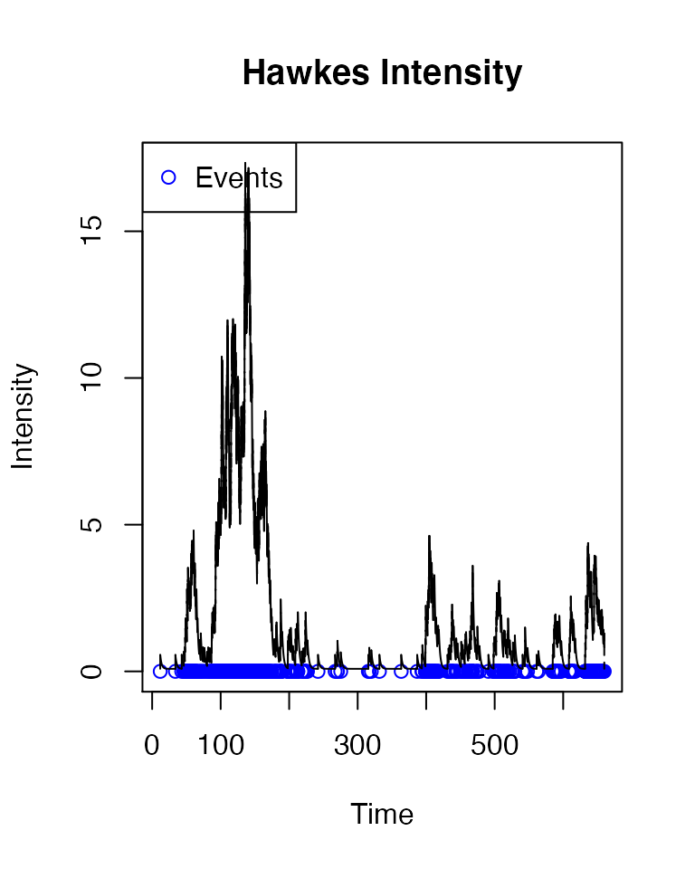
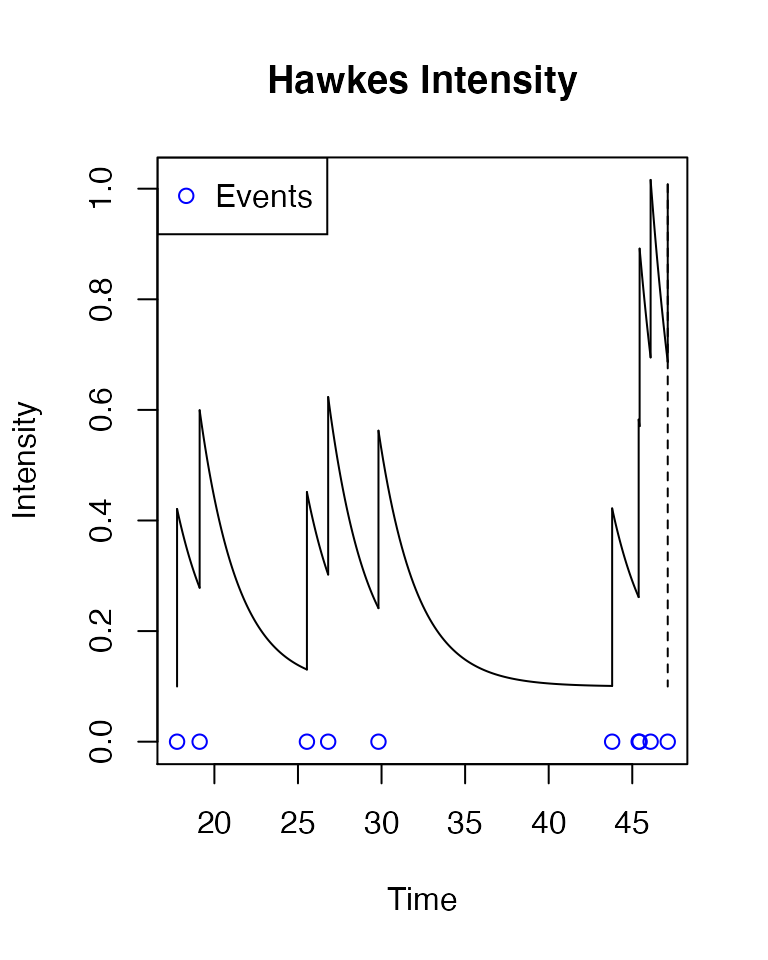
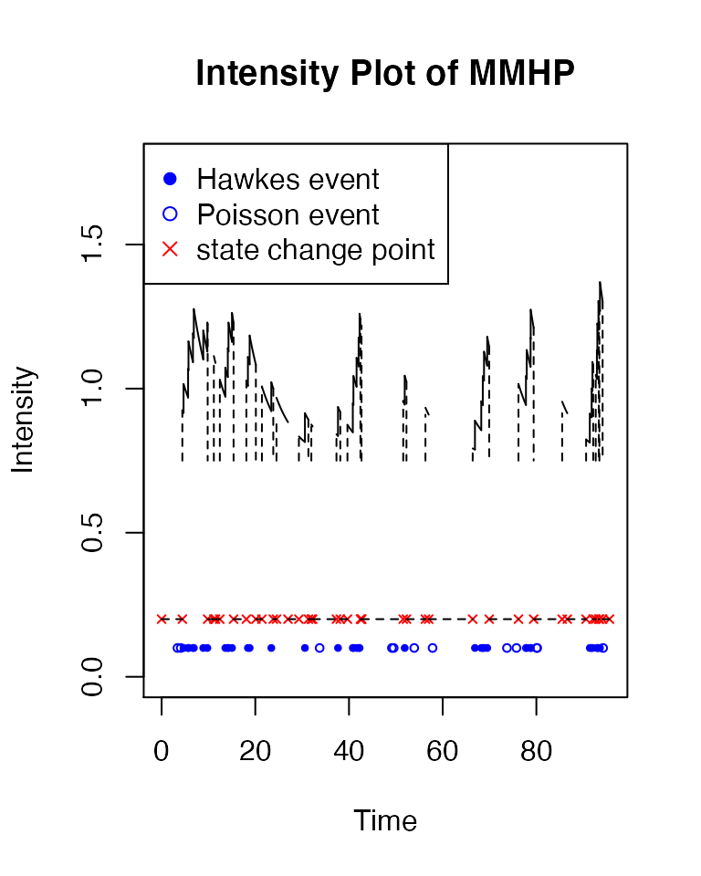
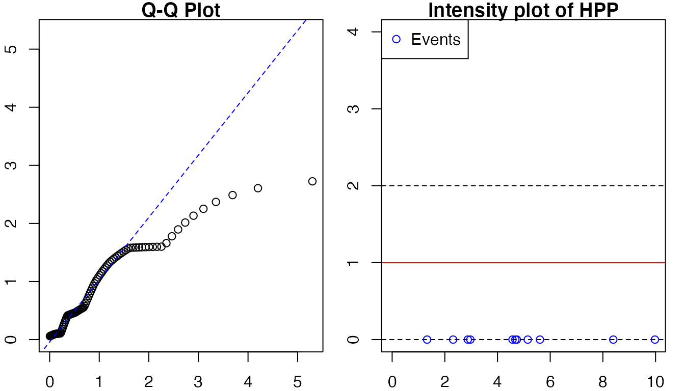
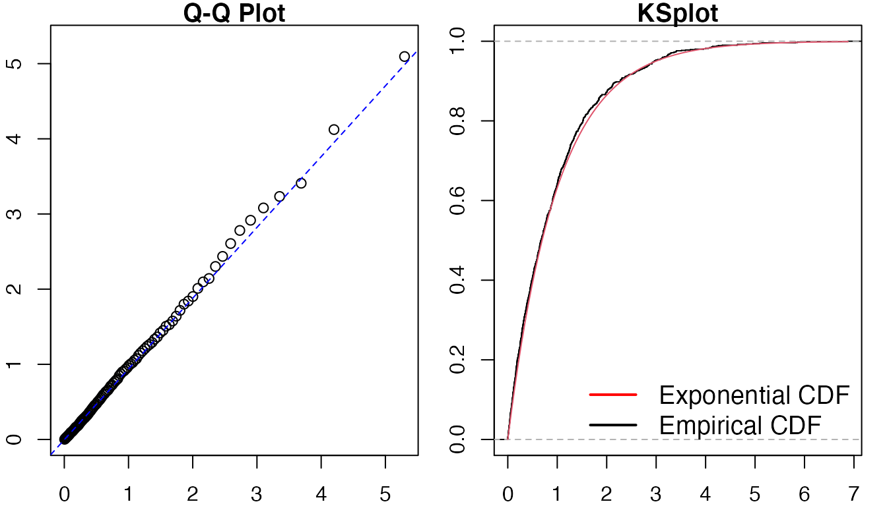
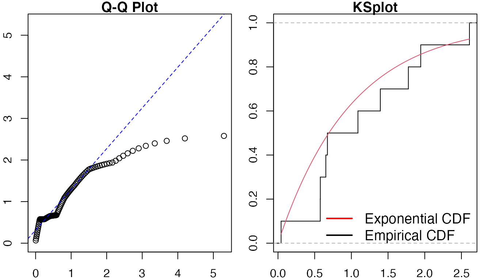
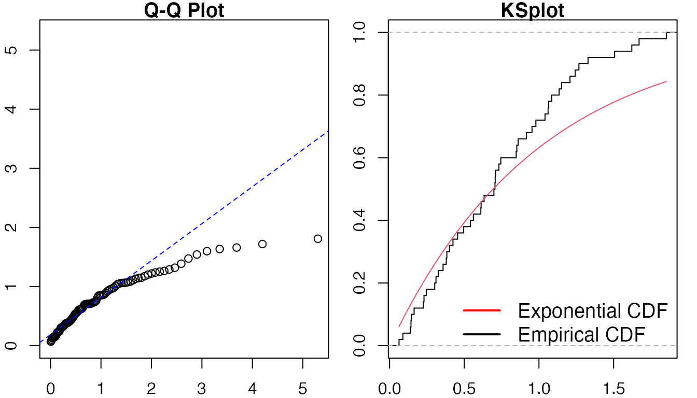

ppdiag, diagnostic tools for temporal Point Processes
Sally Sun, Owen G. Ward, Xiaoxi Zhao, Jing Wu, Tian Zheng.
ppdiag.Rmd
library(ppdiag)This vignette provides an introduction to the functions available in ppdiag to evaluate the fit of univariate temporal point processes.
To achieve this, we currently include a range of functions which allow a user to:
- Simulate data from a range of common univariate point processes.
- Fit a range of univariate point processes to data.
- After fitting a point process to some data, evaluate the ability of that point process to capture the temporal structure present in this data.
Classes
- Homogeneous Poisson Process:
hpp(lambda, start=0, end=1, n = NULL) creates an object of a list type in class ‘hpp’.
hpp_obj <- pp_hpp(lambda = 1)
hpp_obj
#> $lambda
#> [1] 1
#>
#> $events
#> NULL
#>
#> attr(,"class")
#> [1] "hpp"- Hawkes Process:
hp(lambda0, alpha, beta, events = NULL) creates an object of list type in class ‘hp’.
hp_obj <- pp_hp(lambda0 = 0.1,alpha = 0.45,beta = 0.5)
hp_obj
#> $lambda0
#> [1] 0.1
#>
#> $alpha
#> [1] 0.45
#>
#> $beta
#> [1] 0.5
#>
#> $events
#> NULL
#>
#> attr(,"class")
#> [1] "hp"- Markov-Modulated Hawkes Process:
mmhp(lambda0, lambda1, alpha, beta, Q = NULL, delta = NULL, events = NULL) creates an object of type in class ‘mmhp’.
Q <- matrix(c(-0.4, 0.4, 0.2, -0.2), ncol = 2, byrow = TRUE)
mmhp_obj <- pp_mmhp(Q, delta = c(1 / 3, 2 / 3),
lambda0 = 0.2,
lambda1 = .75,
alpha = 0.1,
beta = 0.2)
mmhp_obj
#> $Q
#> [,1] [,2]
#> [1,] -0.4 0.4
#> [2,] 0.2 -0.2
#>
#> $delta
#> [1] 0.3333333 0.6666667
#>
#> $events
#> NULL
#>
#> $lambda0
#> [1] 0.2
#>
#> $lambda1
#> [1] 0.75
#>
#> $alpha
#> [1] 0.1
#>
#> $beta
#> [1] 0.2
#>
#> attr(,"class")
#> [1] "mmhp"Simulating data
Functions for simulating data is pp_simulate, which take in model and objects of type hpp, hp, and mmhp, respectively, with additional parameters for simulation, and produces a vector of simulated event times.
- Homogeneous Poisson Process:
pp_simulate takes a hpp object and returns a vector of event times simulated from the corresponding homogeneous Poisson process.
pp_simulate(pp_obj, start=0, end=NULL, n=NULL) can simulate events up to a specified end time.
hpp_events <- pp_simulate(hpp_obj, end=10)
#> Simulating up to endtime. To simulate n events specify n.
hpp_events
#> [1] 1.326108 2.314636 2.871762 2.968044 4.569107 4.676259 4.733173 5.147480
#> [9] 5.610923 8.394997 9.974999or specify a vector of certain length.
pp_simulate(hpp_obj, end=10, n=5)
#> 5 events simulated. To simulate up to an endtime set n=NULL.
#> [1] 1.326108 2.314636 2.871762 2.968044 4.569107- Hawkes Process:
pp_simulate(hp_obj, end=NULL, n=NULL) returns event times simulated from the Hawkes process specified by hp, up to some end time, along with the maximum overall intensity of the Hawkes process given these events.
hp_events <- pp_simulate(hp_obj, start = 0, end = 50)
#> Simulating up to endtime. To simulate n events specify n.
hp_events
#> $events
#> [1] 11.78415 33.91207 43.14897 46.15627 47.73615 48.19940 48.50823 48.71301
#> [9] 49.84623
#>
#> $lambda.max
#> [1] 1.28386You can also specify desired length of events.
hp_events <- pp_simulate(hp_obj, start = 0, end = 50, n=1000)
#> 1000 events simulated. To simulate up to endtime set n=NULL.
# hp_events- Markov-Modulated Hawkes Process:
pp_simulate(mmhp_obj, n=NULL, end=NULL) simulates events from a specified Markov Modulated Hawkes process.
mmhp_events <- pp_simulate(object = mmhp_obj, n = 50)
#> 50 events simulated. To simulate up to endtime set given_states=TRUE and provide states.
mmhp_events
#> $x
#> [1] 0.0000000 0.7285336 5.8137610 11.9272561 17.8385442 22.4562723
#> [7] 25.0798696 35.1190316 35.8304729 36.8798058 38.8152752 39.8028849
#> [13] 51.8849168 60.8214593 61.3946842 65.4872551 69.4464953 70.7651866
#> [19] 71.0966151
#>
#> $z
#> [1] 2 1 2 1 2 1 2 1 2 1 2 1 2 1 2 1 2 1 2
#>
#> $events
#> [1] 0.0000000 0.6989763 2.7700821 3.1654724 3.4130425 4.5677887
#> [7] 4.6259511 4.9668279 6.9933208 7.9889790 12.1315090 12.5398929
#> [13] 13.0588697 13.2555316 13.8310834 14.1077121 14.2147421 15.1641282
#> [19] 16.7495772 17.2309458 21.4646157 22.6210524 23.5325960 24.1579295
#> [25] 24.2760086 24.4663582 25.0606683 27.1910818 35.2724004 35.5323386
#> [31] 36.8873209 37.3111575 40.1398829 42.2176309 43.3107127 44.8976428
#> [37] 45.6107304 46.9660686 47.4115540 49.4994842 49.8789671 50.2954204
#> [43] 51.3362481 51.7293247 54.3518994 61.6909902 66.4410393 66.7037017
#> [49] 67.5702420 68.5841687 70.8872620
#>
#> $zt
#> [1] 2 2 1 1 1 1 1 1 2 2 1 1 1 1 1 1 1 1 1 1 2 1 1 1 1 1 1 2 1 1 1 1 1 1 1 1 1 1
#> [39] 1 1 1 1 1 1 2 2 1 1 1 1 1
#>
#> $lambda.max
#> [1] 1.382352
#>
#> $start
#> [1] 0
#>
#> $end
#> [1] 71.09662Fitting a point process
Functions for fitting objects include fithpp and fithp, which take in event times and produce object of type hpp and hp, respectively.
- Homogeneous Poisson Process:
fithpp(hpp_events) returns an object of class hpp.
fit_hpp <- fithpp(hpp_events)
fit_hpp
#> $lambda
#> [1] 1.102757
#>
#> $events
#> [1] 1.326108 2.314636 2.871762 2.968044 4.569107 4.676259 4.733173 5.147480
#> [9] 5.610923 8.394997 9.974999
#>
#> attr(,"class")
#> [1] "pp_hpp"- Hawkes Process:
fithp(vec,t,end) returns an object of class hp, estimating the three parameters of the Hawkes process using constrOptim, to ensure the solution is feasible. This can be a challenging optimisation problem and convergence is not guaranteed.
fit_hp <- fithp(hp_events$events)
fit_hp[1:3]
#> $lambda0
#> [1] 0.08761267
#>
#> $alpha
#> [1] 0.4729441
#>
#> $beta
#> [1] 0.5006813Diagnosing the fit of a point process to data
There are several existing methods which can be used to assess the goodness of fit of a point process to temporal data. In this package we allow a user to:
- Examine the distribution of the rescaled interevent times, by utilising the time rescaling theorem.
- Examine the residual process of an estimated point process, in particular computing the raw and Pearson residuals for a given point process fit to data.
- Visually inspect the estimated intensity of the point process.
Visualize the intensity function
drawHPPIntensity(hpp, events, color = "red", start = 0, end = max(events), fit=FALSE, int_title = "Intensity homogeneous Poisson Process") plots the intensity of a homogeneous poisson process. To plot the events along with intensity, set plot_events=TRUE.
drawHPPIntensity(fit_hpp, events = hpp_events,
color = "red", plot_events=TRUE)
#> Using the hpp object. Set fit=TRUE to fit events provided.
To plot the fitted intensity on the inputted events, specify fit=TRUE.
drawHPPIntensity(fit_hpp, events=hp_events$events,
color = "red", fit=TRUE, plot_events=TRUE)
#> Fitting provided events. Set events=NULL to use the events in object.
drawHPIntensity(hp, start = 0, end = max(events), history=0, events, color = 1, i = 1, add=FALSE, fit=FALSE, vec=rep(0.1,3), int_title="Hawkes Intensity") plots the intensity of a hawkes process. To plot the events along with intensity, set plot_events=TRUE.
drawHPIntensity(fit_hp, start = min(hp_events$events),
end = max(hp_events$events), history = 0,
events = hp_events$events, plot_events = TRUE)
#> Using the hp object. Set fit=TRUE to fit events provided.
To plot the fitted intensity on the input events, set fit=TRUE.
drawHPIntensity(fit_hp, start = min(hp_events$events),
end = max(hp_events$events),
history = 0,
events = hp_events$events,
fit=TRUE,
plot_events=TRUE)
#> Fitting provided events. Set events=NULL to use the events in object.
drawUniMMHPIntensity(mmhp, simulation, add = FALSE, fit=FALSE, color = 1, int_title = "Intensity Plot of MMHP") plots the intensity of a mmhp process.
drawUniMMHPIntensity(mmhp_obj, mmhp_events)
Diagnostics tools of the models
- Homogeneous Poisson Process
pp_diag(object, events) gives diagnostics of the model, including a qq plot, a ks plot, ks test, raw and pearson residuals in one function.
pp_diag(hpp_obj,hpp_events)
#>
#> Raw residual: 1.025001
#> Pearson residual: 1.025001
#>
#> One-sample Kolmogorov-Smirnov test
#>
#> data: r
#> D = 0.17112, p-value = 0.8516
#> alternative hypothesis: two-sidedpp_residual(object, events, start = min(events),end = max(events)) gives raw and pearson residuals.
pp_residual(hpp_obj,hpp_events)
#> $raw
#> [1] 1.025001
#>
#> $pearson
#> [1] 1.025001intensityqqplot(object, events) gives both qqplot and intensity plot.
intensityqqplot(hpp_obj, hpp_events)
#> Using the hpp object. Set fit=TRUE to fit events provided.
- Hawkes Process
pp_diag(object, events) gives diagnostics of the model, including a qq plot, a ks plot, ks test, raw and pearson residuals in one function.
pp_diag(hp_obj,hp_events$events)
#> Raw residual: 36.30115
#> Pearson residual: 7.207582
#>
#> One-sample Kolmogorov-Smirnov test
#>
#> data: r
#> D = 0.025933, p-value = 0.5118
#> alternative hypothesis: two-sidedpp_residual(object, events, start = min(events),end = max(events)) gives raw and pearson residuals.
pp_residual(hp_obj,hp_events$events)
#> $raw
#> [1] 36.30115
#>
#> $pearson
#> [1] 7.207582intensityqqplot(object, events) gives both qqplot and intensity plot.
intensityqqplot(hp_obj, hp_events$events)
#> Using the hp object. Set fit = TRUE to fit events provided.
MMHP
pp_diag(mmhp_obj,mmhp_events$events)
#> Raw residual: 13.55721
#> Pearson residual: 22.84376
#>
#> One-sample Kolmogorov-Smirnov test
#>
#> data: r
#> D = 0.18489, p-value = 0.05724
#> alternative hypothesis: two-sided